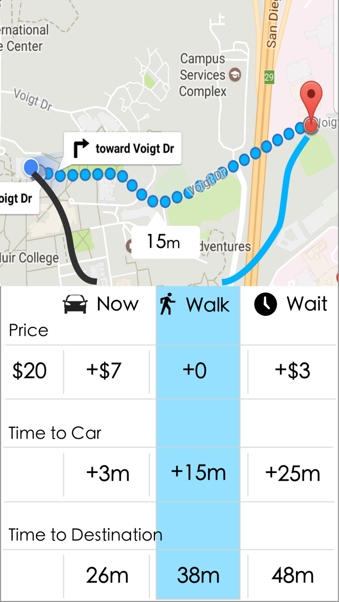
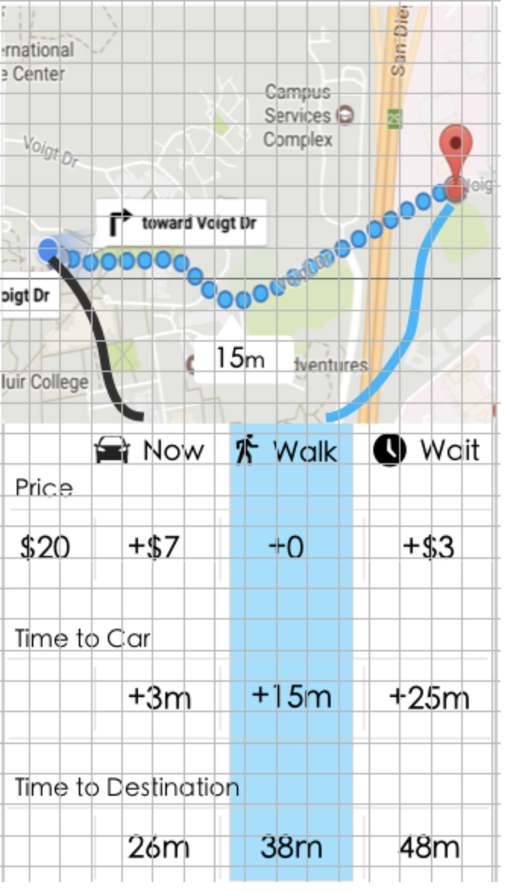

In response to feedback on Tuesday
Lead User:
Ruoqi uses Uber to get places. When thinking about leaving, she checks Uber to see Surge pricing, and when the current time is higher cost she tries to find ways around paying extra for the ride. She will move her location around in hopes to find a nearby area outside of a surge zone, and will also consider waiting for a while in case the surge zone might end. To save money she is willing to walk or wait.
Task:
After setting a destination in the Uber app, allow options which allow the user to save money. These options include leaving now, which is the standard functionality of the Uber app, and accepting the surge pricing; walking to the end of the surge pricing zone to save money; or waiting the surge pricing time out. The interface after setting a destination allows the user to compare these options - specifically the time and price differences between the options.
PDF:
